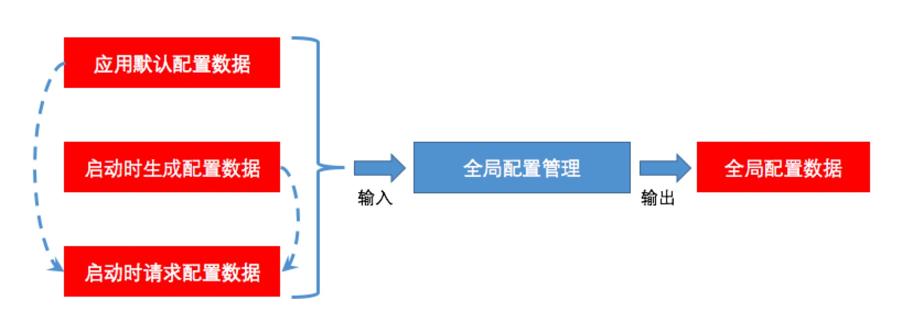
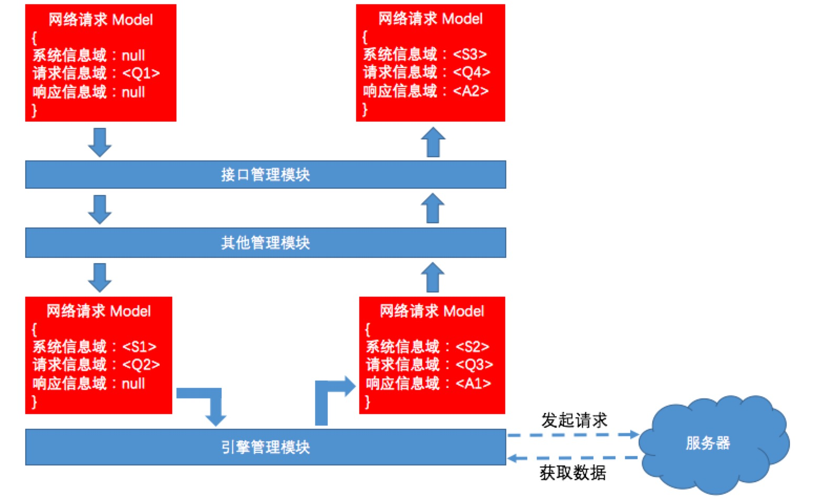

江浩，软件架构师。先后从事 iOS 原生开发、跨平台 SDK 框架开发、React Native、小程序、H5 等前端开发和管理工作。喜欢探究软件技术的原理，同时乐于从工程以及系统的角度分析和解决问题。
这个系列的文章将介绍如何将客户端网络模块打造为一套独立完整的网络系统。
* 系统是一个完整功能的系统，拥有独立的访问方式，和部署方式，拥有完整的生命周期，系统由模块组成;
* 模块是系统的组成部分，不能单独工作，需要依附于系统才能发挥作用，通常是解决一定场景下的问题。


该模块主要完成全局配置数据的生成工作，全局配置数据主要是提供给网络系统内部功能模块和外部业务模块使用。

全局配置管理模块的输入有三个，分别是：
应用默认配置数据：主要是默认全局配置请求参数，写死在应用程序中，比如默认请求方法、超时时间、最大请求次数、请求服务器等；启动生成配置数据：主要是应用启动时的一些外部请求参数，通过自检测生成或外部生成传入的方式获取，比如应用启动时间、应用启动地点、应用启动版本号等；启动时请求配置数据：主要是根据当前客户端和服务器状态动态下发的请求参数，通过启动时发起请求获取(请求参数来自应用默认配置数据和启动时生成配置数据)，比如最近的服务器 IP 地址以及用于网络拨测的测试数据等。全局配置管理模块的输出主要是全局配置数据。全局配置数据 主要是全局配置管理模块三大输入数据的集合，该数据的输出方式有两种：
全局配置数据全局配置数据用于获取全部全局配置数据的解密密码通过特殊的方式保存在某个特殊位置，且与应用版本以及网络系统版本相绑定。从而保证了全局配置数据既可以通过外部方式获取加密数据以用于功能监测，亦可以通过内部方式获取解密数据以用于功能自检。
全局配置数据内容示例：
* 正则表达式校验规则：主要用于校验请求链接的规则和类型；
* 请求配置初始参数：定义了全局管理的初始参数，包括请求标识符、请求域名、字符串标志和校验规则；
* 网络调试模拟可选配置：定义了断网、超时以及失败等各种网络调试所需的模拟场景；
* 默认超时时间：定义了各种可能业务场景的默认超时时间；
* 最大请求次数：定了各种可能业务场景的默认最大请求次数；
* 返回数据校验可选规则枚举：定义了各种可能业务场景的返回数据校验规则；
* 网络状态枚举：定义了网络创建、进行中、取消、获取缓存、获取请求返回和失败状态；
* 异常枚举：定义了诸如网络异常、系统错误、处理完成、参数错误、登陆与授权错误等各种可能的业务异常结果；
* 请求方法枚举：定义了 POST、GET、PUT、PATCH、DELETE等常规网络请求方法；
* 请求标识符枚举：定义了各种请求标识符类型；
* 网络系统模式枚举：开发环境下可提供模式切换，用于业务模块和网络功能开发调试；生产环境下始终返回生产模式；
* ...该模块主要完成请求数据的生成和响应数据的返回等操作，包括网络配置管理、参数配置管理和缓存配置管理三个子模块。

网络请求 Model 包含三个信息域：
请求数据相关的数据字段，承载网络请求相关的信息。响应数据相关的数据字段，承载网络响应相关的信息。
我们可以将该网络系统的工作流程理解为：
请求信息域数据的网络请求 Model 通过调用接口抛进该网络系统；系统信息域中，同时更新请求信息域内容；响应信息域，并逐层返回；注意：
实际网络请求 Model 在网络系统内部进入引擎模块后，会进行一步封装。转变为网络计数 Model，我们会在引擎模块介绍时再介绍网络计数 Model，同时上图样式会有稍许变化。请求管理模块的输入数据有四类，分别是：
全局配置数据：主要是通过全局配置 Model 的预定义公有成员数据获取的数据，用于配置网络请求和其他设置；用户输入数据：主要是用户根据业务需求实际需要输入的请求参数和网络配置设置，用于配置网络请求和其他设置；网络响应数据：主要是网络请求响应的数据，该数据可能因为网络系统的不同模式或其他差异配置而与原始的网络返回数据不同，用于生成响应数据并返回给用户；其他数据：主要是来自数据管理的缓存数据、测试数据、调试数据或其他，用于生成响应数据并返回给用户。请求管理模块的输出数据输出主要是请求数据、响应数据和系统数据：
请求数据主要是经过请求管理组装生成的用于向服务器发起请求的数据，存储在网络请求 Model 的请求信息域相关字段中；响应数据主要是经过请求管理组装生成的用于返回给用户的数据，存储在网络请求 Model 的响应信息域相关字段中；系统数据主要是经过请求管理组装生成的用于传递给其他模块和用户的数据，存储在网络请求 Model 的系统信息域相关字段中。请求管理模块中的输出数据除了传递给其他模块用于功能参考和输出，同时也会被缓存在数据管理模块中用于数据录制和测试。具体的缓存策略根据网络系统的不同模式以及配置的不同会有差异。
该模块主要完成请求数据的生成和响应数据的返回等操作，核心子模块是引擎配置管理模块和计数器管理模块。
网络引擎主要包括：自定义网络引擎、ASIHTTPRequest、AFNetworking、CURL、原生网络引擎以及不同引擎的不同版本等。引擎配置管理模块会根据传入的网络请求 Model 中系统信息域相关信息，确定选择何种网络引擎进行网络请求。
常用的引擎选择因素包括：引擎A/B测试（不同引擎或不同版本的性能测试需要）、网络功能测试（网络测速需要）、业务需求（网络降级需要以及调试需要）。

狭义的计数器主要用于网络计数需要，用于统计各种不同类型的网络请求个数。广义的计数器包括网络请求和响应数据的录制需要，为网络功能测试以及调试提供底层功能支持。技术及管理模块会生成和维护网络计数 Model。该 Model 存储于数据管理模块，保存了每一次网络请求以及返回的全部信息。
网络计数 Model 是网络请求 Model 的一个子类，除包含正常网络请求的三大信息域（系统信息域、请求信息域、响应信息域）之外，还包括计数信息域，用于保存网络计数相关信息（调试、测试、模拟等数据）。

同时引擎管理模块作为网络系统的核心模块，与调试管理模块、测试管理模块以及业务支持模块均有关联。
核心引擎管理模块与三大外部模块关联似乎与“高内聚低耦合”的软件架构设计原则相违背。但实际上如果要实现软件系统的调试、测试以及业务支持功能，就离不开对核心引擎模块的监控和管理。在这里，我们利用软件测试中常用的“打桩”方式，来实现调试管理模块、测试管理模块以及业务支持模块的“热插拔”管理。
其原理就是：
* 在三大模块（调试管理模块、测试管理模块以及业务支持模块）中定义特定的“打桩”函数，函数体保留简洁逻辑（埋点逻辑）；
* 在引擎管理模块中特定的位置引入这些“打桩”函数，保留必要的标记和埋点；
* 当参数为空或特定值时，相关接口返回为空或特定值。这些空数据和特定值不会对软件系统的功能逻辑产生影响；
* 当需要调用三大模块功能时，会在外部模块自定义子类并实现“打桩”函数功能，通过传入特定的参数，激活三大模块的逻辑功能；
* 三大模块的功能只在特定条件（调试、测试、业务执行）下会影响引擎管理模块的逻辑，通过不同配置控制开关；
* 当软件系统需要移植时，与业务过分耦合的自定义代码不需要移植，仅保留“打桩”函数简洁逻辑（埋点逻辑）即可。
引擎管理模块的输入数据有四类，分别是：
全局配置数据：主要是通过全局配置 Model 的预定义公有成员数据获取的数据，用于配置网络请求和其他设置；请求数据：主要是经过请求管理模块进一步封装的网络请求 Model，用于发起网络请求并装填服务器返回数据；其他数据：主要是来自数据管理的缓存数据、测试数据、调试数据或其他，用于生成响应数据并返回给用户或录入数据管理模块。响应数据：主要是网络请求响应的数据，该数据用于生成响应数据返回给用户或录入数据管理模块。引擎管理模块的输出数据输出主要是请求数据、响应数据和系统数据：
请求数据主要是经过请求管理组装生成的用于向服务器发起请求的数据，在引擎管理模块会对请求数据中的部分标志位进行更新，存储在网络请求 Model 的请求数据域相关字段中；响应数据主要是经过引擎管理组装生成的用于返回给其他模块的数据，存储在网络请求 Model 的响应数据域相关字段中；系统数据主要是经过请求管理组装生成的用于传递给其他模块和用户的数据，在引擎管理模块会对系统数据中的部分标志位进行更新，存储在网络请求 Model 的系统数据域相关字段中。引擎管理模块中的输出数据除了传递给其他模块用于功能参考和输出，同时也会被缓存在数据管理模块中用于数据录制和测试。具体的缓存策略根据网络系统的不同模式以及配置的不同会有差异。